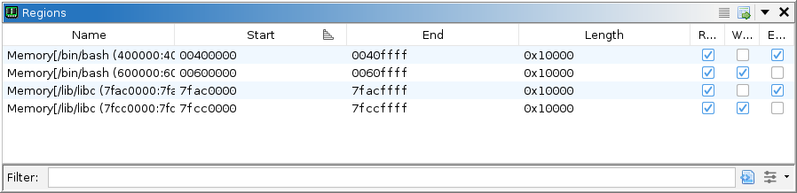

|  |
Regions refer to ranges of allocated or reserved memory reported by the target. The precise meaning of these regions may vary depending on the nature of the target. For user-mode applications, this is generally pages of memory allocated for image sections, the stack, the heap, etc. The regions manager allows the user to rename pages and modify the recorded permissions. Note that such modifications do not affect the target; but only the recording.
The table has the following columns:
Other than modifications enabled by the table, the Regions window provides the following actions:
This action is available when at least one region is selected. It selects all addresses in the dynamic listing contained by the selected regions.
This action is available when the dynamic listing's cursor is at a valid location. It selects the region containing that cursor. If the dynamic listing has a selection, it selects all regions intersecting that selection.